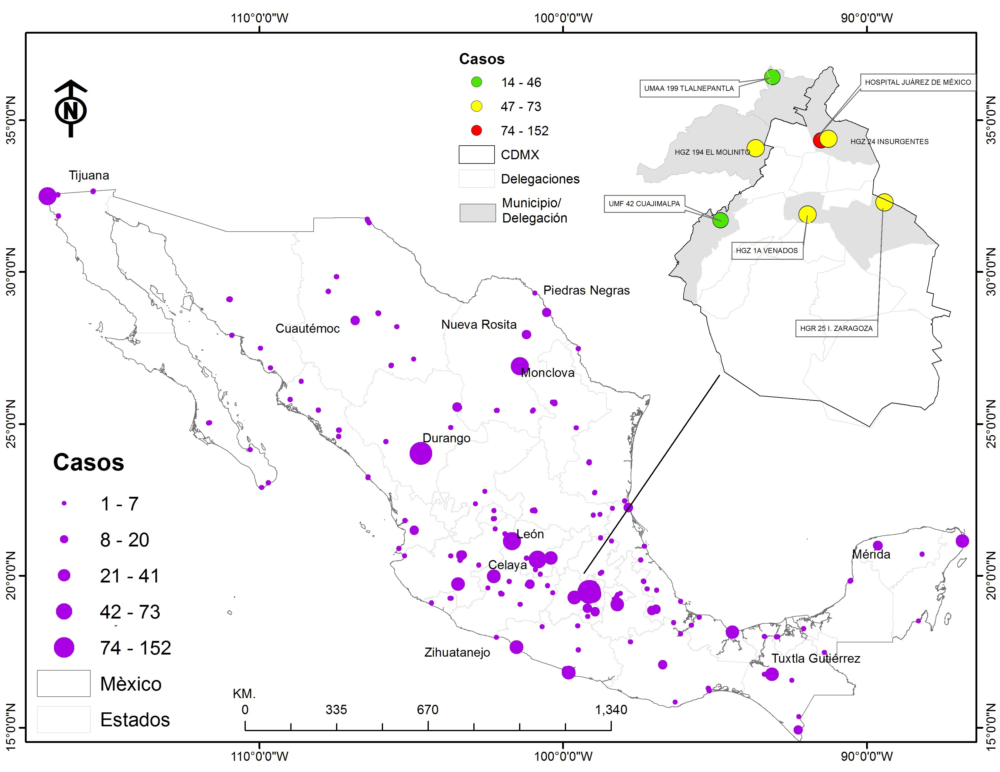
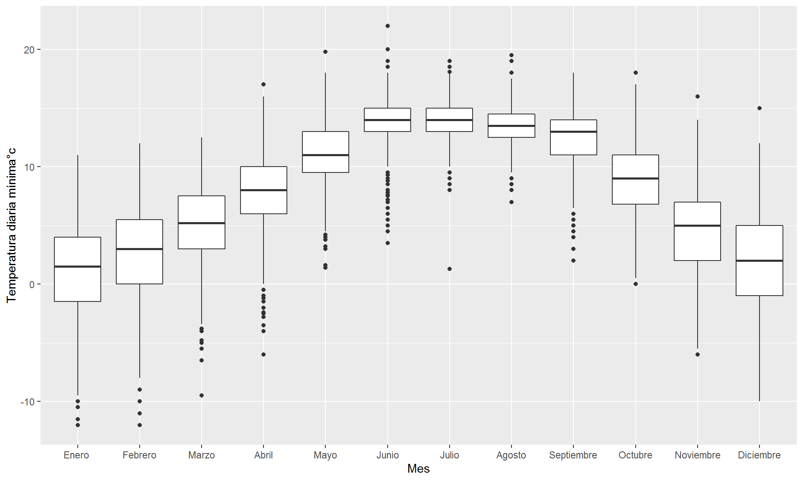

En primera instancia, se presenta la tasa de morbilidad por entidad, lo que permite contar con el escenario nacional como una base de referencia (Figura 1).
Figura 1 Tasa de morbilidad ajustada por edad y sexo, según entidad Federativa México 2015.
Fuente: Elaboración propia datos SINAIS 2015.La estimación permite distinguir un subconjunto de 12 entidades en donde el problema de rinitis es particularmente elevado, la estimación de tasa de morbilidad ajustada por edad y sexo en este subconjunto supera la tasa promedio en el país que es de 16 habitantes por millón. Entre este subconjunto de entidades se encuentran importantes centros urbanos en el país como Ciudad de México, Guanajuato, Querétaro y el Estado de México, sin embargo, el cálculo revela que la mayor tasa de morbilidad se encuentra en el estado de Durango, donde alcanza un valor de 120 personas para el sexo femenino y 75 personas por millón de habitantes para el sexo masculino. Asimismo, a pesar de que entre las entidades de mayor tasa se halla un patrón que parece afectar en mayor medida al sexo masculino, este patrón no se verifica en el resto de las entidades y de hecho al corroborar con una prueba de diferencia entre medias no se tiene evidencia de una diferencia estadísticamente significativa.3 La heterogeneidad observada en esta primera estimación da cuenta de la complejidad de los determinantes de este padecimiento. Para comprender mejor su distribución en términos espaciales y aportar elementos adicionales para su entendimiento, la Figura 2 representa la ocurrencia de casos por centro hospitalario dentro del territorio nacional en 2015.
Figura 2: Casos registrados en centros hospitalarios. México 2015
 Fuente: elaboración propia con datos del SINAIS 2015.
Si bien el efecto de las ciudades de mayor tamaño poblacional es claro en la región centro; también se identifica la presencia del padecimiento en hospitales desde la frontera sur y sitios distantes del centro como aquellos en el norte del país, tal es el caso del Hospital General de Zona Medicina familiar 1 (HGZMF) de la ciudad Durango, que registró el mayor número de casos en México con un total de 152. Esta dispersión territorial sugiere una combinación compleja en los determinantes, más allá de la distinción entre espacios urbanos y rurales y al mismo tiempo advierte sobre la necesidad de realizar estimaciones relativas para controlar por el efecto del tamaño poblacional.
A continuación, se considera el caso de Durango con mayor detenimiento a partir del análisis del componente climático, un determinante de índole ambiental reconocido con potencial explicativo en esta problemática.
El rango de las fluctuaciones en la temperatura mínima diaria observada en la estación de monitoreo con clave 10092 ubicada en la ciudad de Durango (lat 0024.024, log -104.673, alt 1,900 msnm), aporta evidencia de un patrón inferior a los 5°C entre los meses de noviembre y febrero, trayectoria consistente por más de cuatro décadas de registros examinados. Más aún, es posible corroborar que la temperatura mínima promedio no supera los 15°C durante todo el año y si tiene fluctuaciones inferiores a los 0°C en el rango del primer cuartil de la distribución para los meses de enero y febrero (Figura 3).
Figura 3: Temperatura diaria mínima estación meteorológica automática (EMA clave10092): Durango 1941-2000
## [1] "Abril" "Agosto" "Diciembre" "Enero " "Febrero"
## [6] "Julio" "Junio" "Marzo" "Mayo" "Noviembre"
## [11] "Octubre" "Septiembre" Fuente: elaboración propia con datos del Servicio Meteorológico Nacional (SMN) 1941-2000